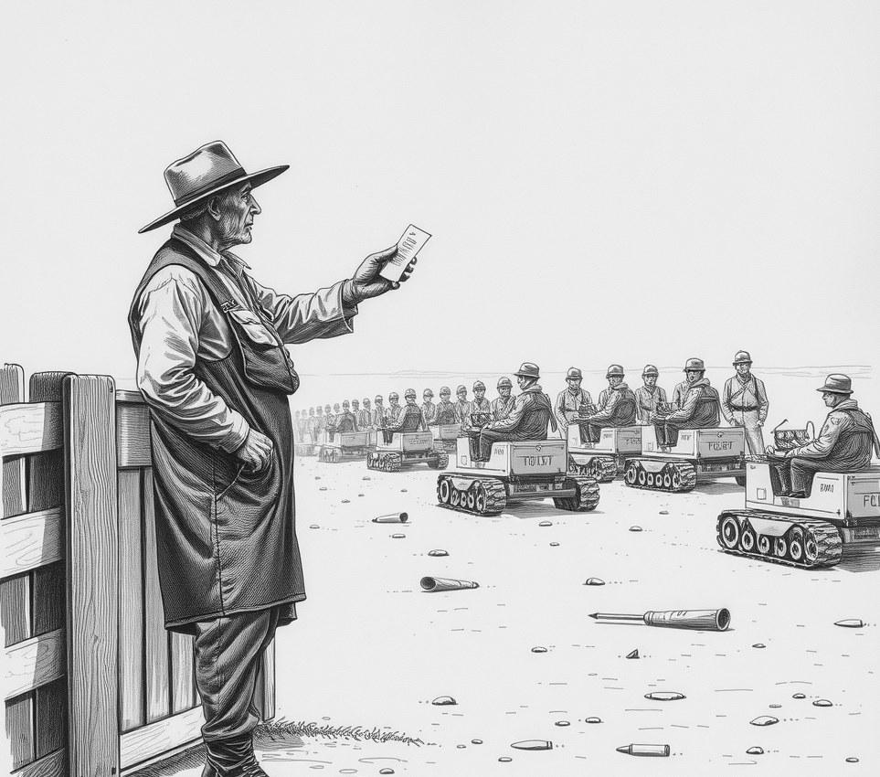

The far hemisphere . 16 November 3270

The Gene-Editing Guild's card of apology reached the far hemisphere's only tardigrade-farmer on the 1,094th day of travel. It is the longest delivery in colony records.
Two thousand engineers set out. 1,962 arrived. Seven were lost to the Salt Divide, and 31 stayed behind to keep the road home open.
The Guild built 14 walking crawlers to carry the card. Three finished the trip. The Guild also packed 400 spare copies in case of damage. Of those, 396 were damaged.
The card has six printed words: "Sorry we missed you. Please rebook."
The Guild's own survey drones logged the farmer at home 212 times when the Guild first called. Nobody knocked once.
The expedition leader gave a 41-minute farewell speech at the farmer's gate. The farmer replied with one word. It was not recorded.
The farm holds 9,000 tardigrade tubs. The engineers were asked not to step in any of them. They stepped in 1,310.
A Guild spokesperson was heard on the cost: "He ordered one vial in the first year, and nobody came, so we came."
The farmer has since rebooked. The Guild says the next slot is in three years.